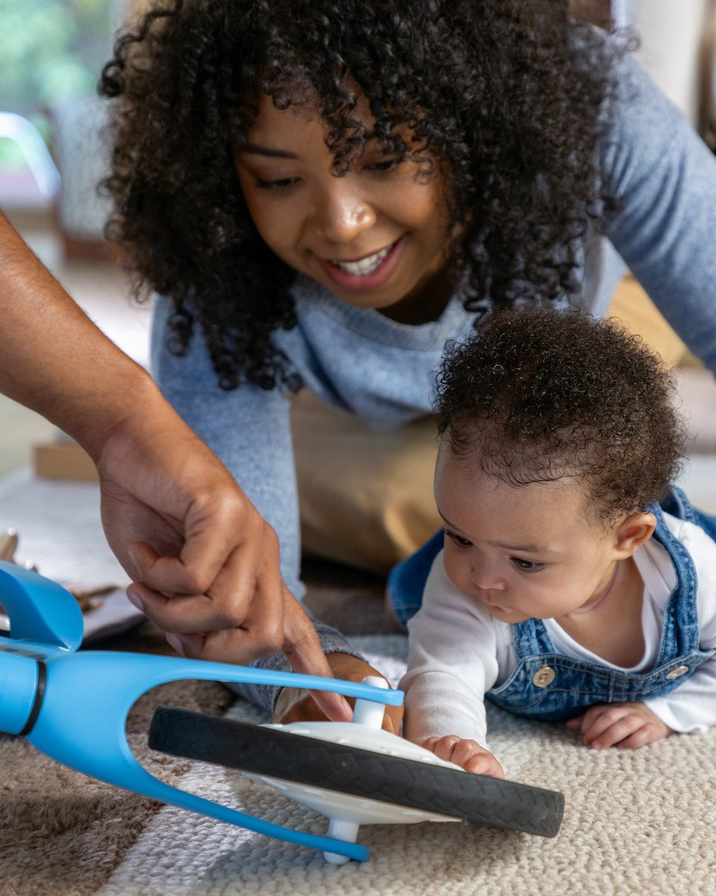
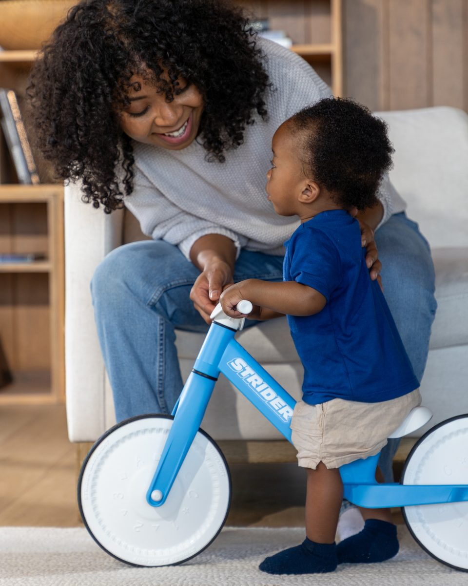
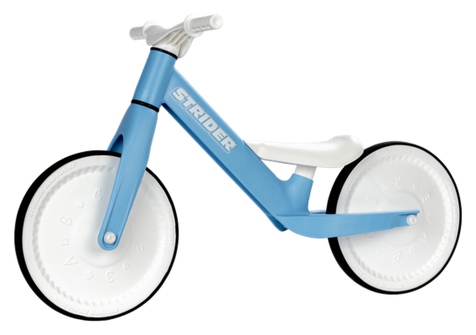
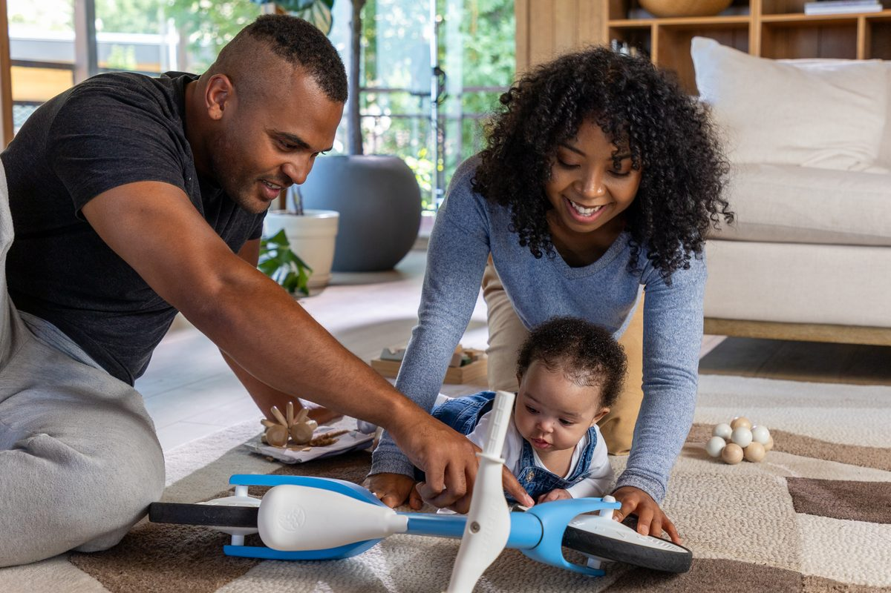
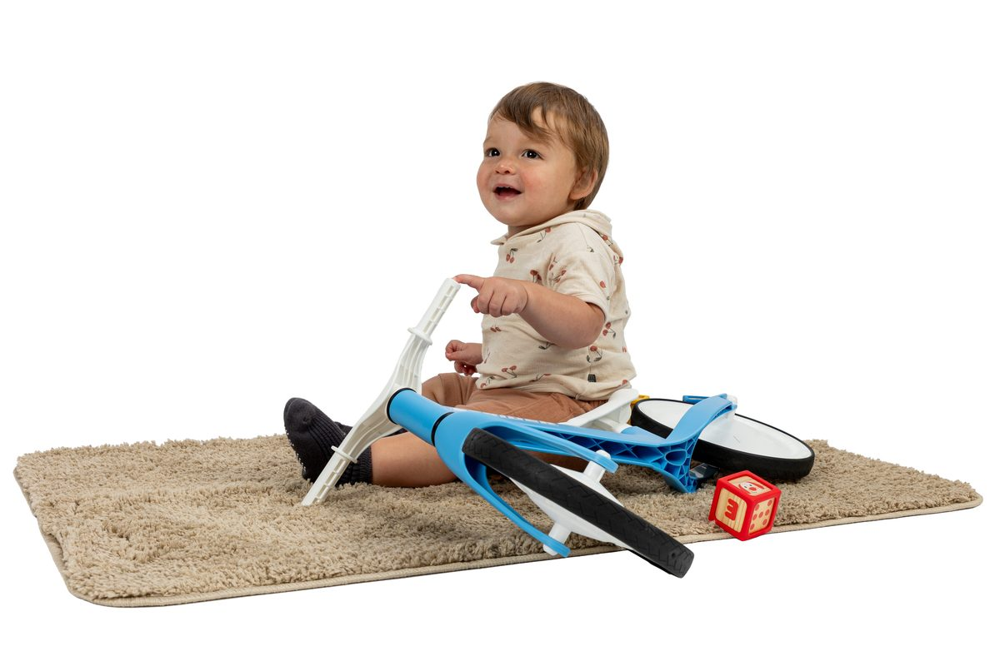
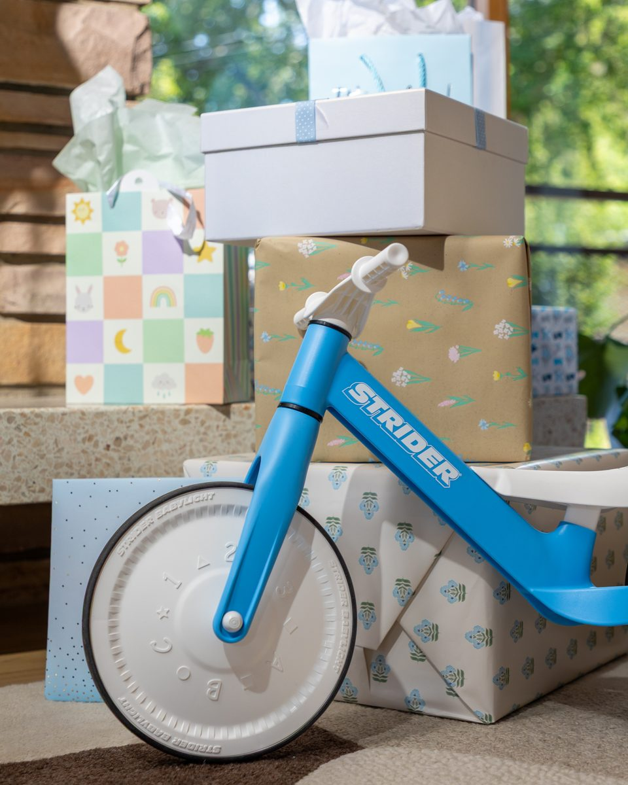
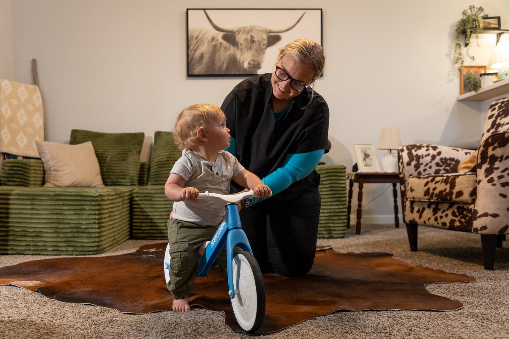

Stage 1
Discovery Starts on the Floor
Raised letters, numbers, and shapes on the wheels invite little hands to reach, touch, and explore — the first building block of coordination.
Baby’s first bike and so much more. From tummy time to their first supported steps, one small adventure buddy grows with every milestone.


Available in 3 colorsSB-B1BL · BlueFrom their first curious reach to their first steps together — the Baby Balance Bike meets them exactly where they are.

Raised letters, numbers, and shapes on the wheels invite little hands to reach, touch, and explore — the first building block of coordination.

As they pull up and push off, the low, stable frame supports every wobble — building the motor skills and confidence for those first assisted steps.

Every push and every spin of the wheels lays the groundwork for the balance and coordination they’ll need on their first real Strider.
Every ride builds real developmental skills — even before they can walk.
Pushing, reaching, and sitting up build the gross motor skills that come before walking.
Steering the handlebar and balancing their weight sharpens hand-eye and whole-body coordination.
Raised textures, spinning wheels, and turning handlebars give curious hands and eyes plenty to discover.
Early, low-pressure time on a “big kid” bike builds familiarity, so when it’s time to ride, there’s less fear to unlearn.
No batteries, no noise, no meltdowns — just calm, screen-free play.
Soft, floor-safe wheels mean it’s just as at home on hardwood as it is outside.
Light enough for baby to push and pull on their own from the very first try.
Out of the box and ready to ride in minutes — no tools drawer required.
Built and tested to children’s toy safety standards, like every Strider.
Sized, weighted, and designed around a baby’s earliest stages — not a shrunk-down toddler bike.


Skip the outgrown-in-a-month onesie. From baby showers to first birthdays, the Baby Balance Bike is a gift that keeps working long after the wrapping paper’s gone — for grandparents, aunts, uncles, and anyone looking for a first gift that actually means something.
Give the Head StartStrider Baby Balance Bike · $59.99 · Blue, Green & Pink
Shop Now